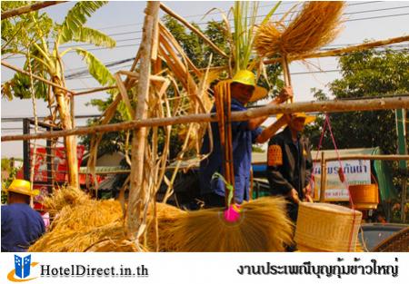

ประเพณีบุญกุ้มข้าวใหญ่
ถือเป็นประเพณีโบราณบุญเดือนยี่ หรือฮีตที่ ๒ ตามประเพณีโบราณฮีตสิบสองคองสิบสี่ คือ จารีตประเพณีที่ประชาชนนำมาปฏิบัติประจำเดือน ทั้ง 12เดือนในรอบปีเป็นประเพณีการทำบุญประจำเดือนที่เกี่ยวเนื่องกับพุทธศาสนา โดยจะนับเดือนตามจันทรคติ นั่นคือ เดือนยี่ จะเป็นบุญคูณลาน หรือ บุญประทายข้าวเปลือก